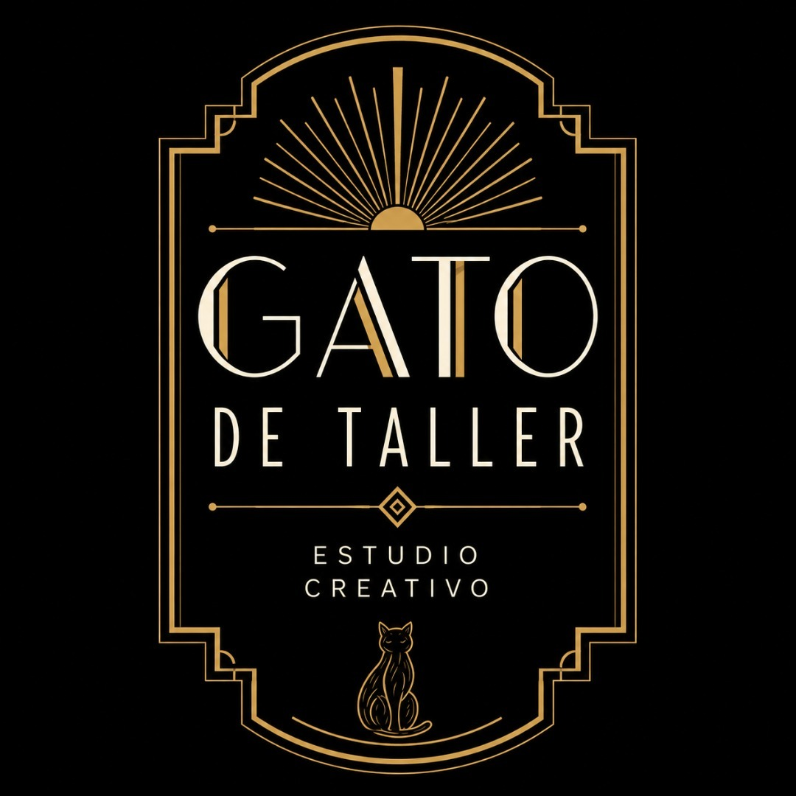
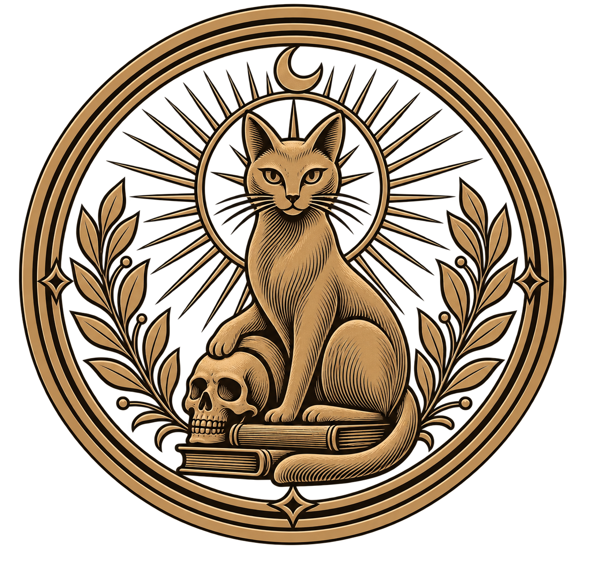

Gato de Taller
⚒️ Taller en obras ⚒️
El Zen de Gato de Taller
Gato de Taller es para los inadaptados.
Para quienes no nos alcanza un solo universo y necesitamos inventar otros.
Un universo donde no son necesarios talentos especiales ni grandes pretensiones, pero sí mucha curiosidad, humor y ganas de hacer cosas.
Es un humor irreverente.
De ese que se atreve a meter un gato donde, probablemente, no debería haber ningún gato.
Puede que a algún masón le choque descubrir la pata de la calavera del Maestro perdido asomando debajo de un gato.
Puede que algún nacionalista considere una falta de respeto verlo tironeando del poncho de nuestro prócer.
Puede que algún amante del arte no apruebe que el gato haya usado de arenero la mano del ahogado.
Y está bien.
Porque no todo está hecho para todos.
El humor que buscamos no es el que se entrega resuelto.
Es el que exige una segunda mirada. Una referencia escondida. Un detalle absurdo.
Algo que quizás solo tiene gracia si sabés dónde mirar.
Cada registro de Gato de Taller tiene algo esperando ser descubierto.
Y si encontraste ese algo, probablemente seas de los nuestros.
Gato de Taller es también una búsqueda:
reunir a los que están dispersos.
A quienes encuentran humor en lugares inesperados.
A quienes disfrutan descubrir una segunda lectura.
A quienes pueden tomarse algo en serio y, al mismo tiempo, reírse de ello.
Si entendiste el chiste, ya estabas en la Cofradía. Bienvenid@ a casa, te estábamos esperando.
